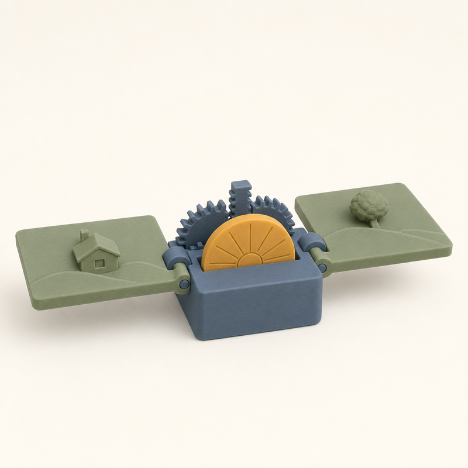
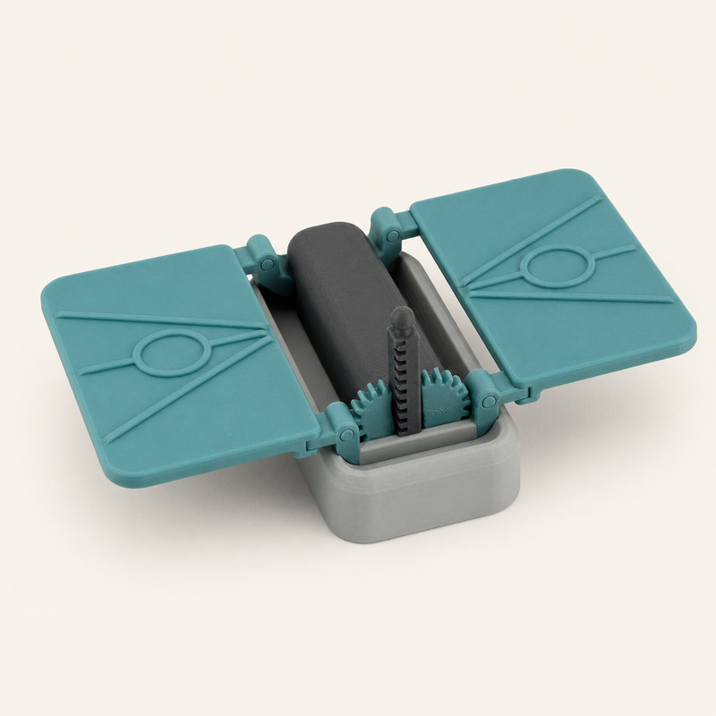
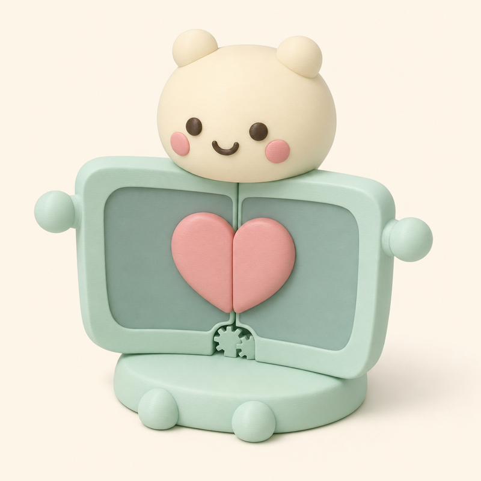
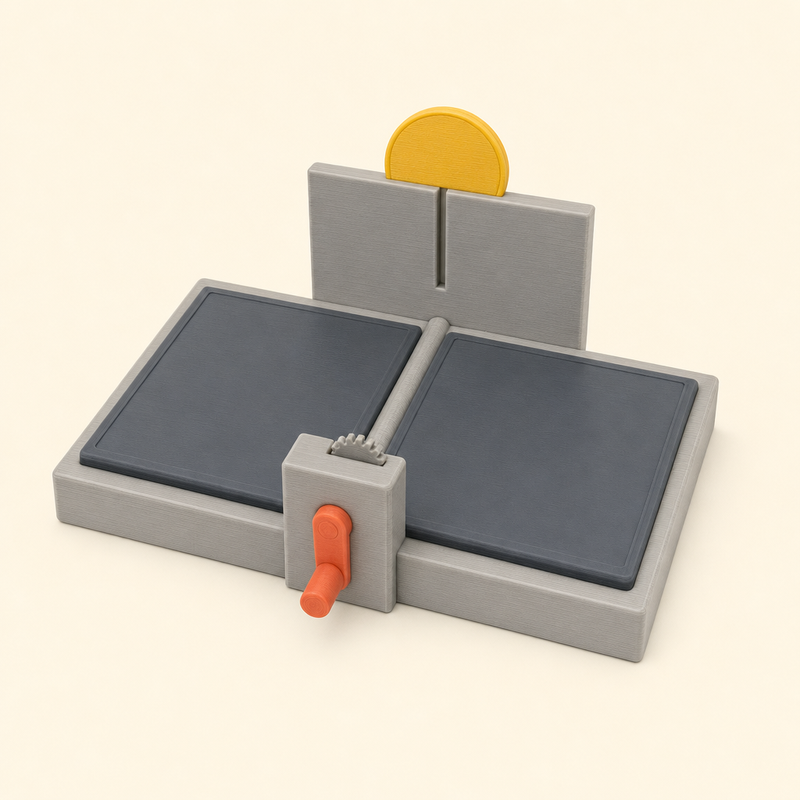
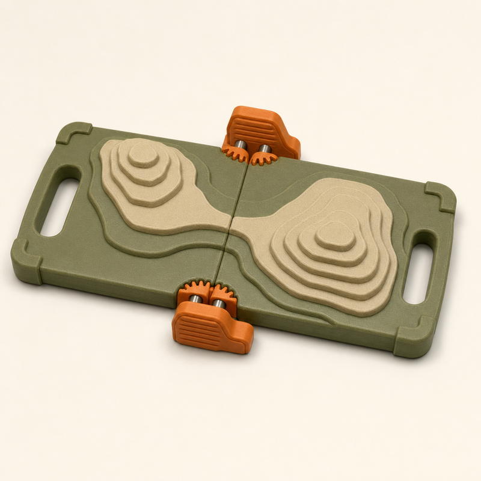
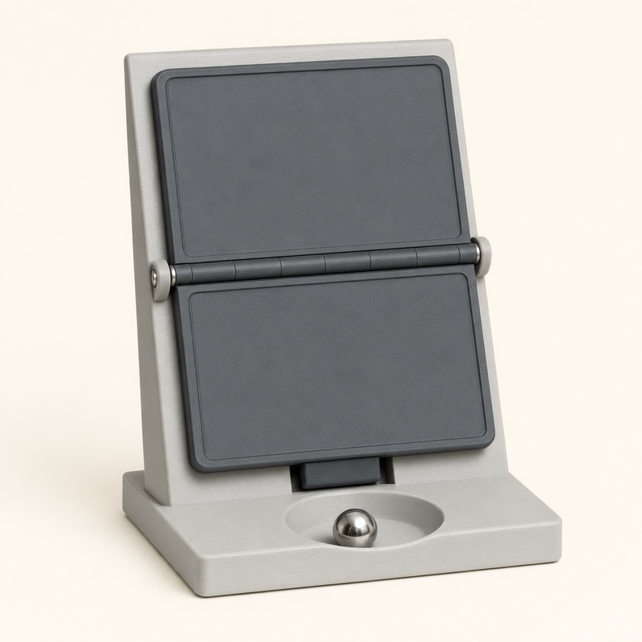

Daybreak
#1 · 10 điểmMở như cuốn sách: hai lá thành phong cảnh bình minh, mặt trời nhô lên giữa gáy.
Bản đang làm.
Ảnh preview gốc của từng bản dự thi, xếp theo điểm của giám khảo. Daybreak thắng 10 điểm; năm ý tưởng còn lại ở dưới.

Mở như cuốn sách: hai lá thành phong cảnh bình minh, mặt trời nhô lên giữa gáy.
Bản đang làm.

Một tấm đứng thẳng. Ấn đỉnh xuống bằng một ngón tay, hai cánh bật ra nằm phẳng thành con bướm đêm có mắt trên cánh.
Một cú ấn, hình dạng đổi hẳn. Cơ cấu thanh răng giống Daybreak.

Bé đầu tròn, thân là cuốn sách. Kéo hai tay ra, thân mở thành bụng có trái tim; gập lại thì tự ôm.
Dễ thương, nhiều cảm xúc. Bụng có "màn hình mờ" nên cần bỏ chi tiết giống điện thoại.

Sân khấu quay tay: quay tay quay, tấm gập mở ra; gần phẳng thì mặt trời mới nhô lên sau phông.
Có nhịp hai hồi, nhưng trông như máy móc văn phòng.

Bản đồ địa hình dày dặn: nhấc một tab, hai lá mở cùng nhau thành bản đồ đường đồng mức.
Bánh răng lộ ở hai đầu gáy, nhìn thấy cơ cấu chạy.

Thả bi thép vào muỗng, sức nặng lật lá trước xuống 180°, bi lăn vào đĩa.
Hai tấm xám trông rất giống điện thoại gập.